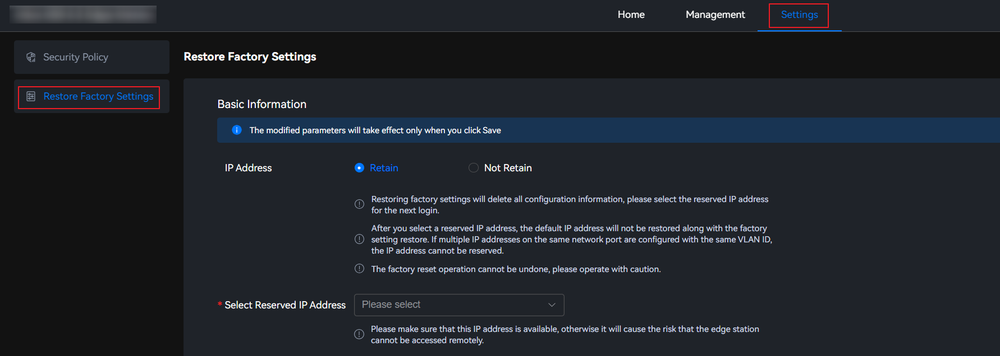

Scenarios
Restore factory settings if the system configuration or other information is damaged.

- Restoring factory settings will delete all configuration information. This operation cannot be undone. Exercise caution when performing this operation.
- During the restoration, ensure that the power supply is stable. If the device is powered off unexpectedly, the restoration may fail.
- During a firmware upgrade or before the upgrade takes effect after a restart, factory settings cannot be restored.
- After factory settings are restored, only one IP address can be used for local WebUI login. If you choose to retain the IP address when restoring factory settings, the retained IP address can be used for local WebUI login after the factory settings are restored. If you choose not to retain the IP address, the IP address of port 0 will be preferentially used for local WebUI login after the factory settings are restored.
Procedure
- Choose Settings > Restore Factory Settings.
The Restore Factory Settings page is displayed.
Figure 1 Restoring factory settings
 - Select whether to retain the network IP address for the next login.
- If yes, set IP Address to Retain, and go to 3.Select the IP address to be retained from the drop-down list box for next login.

You are advised to retain the current login IP address. If the retained IP address is not in the same network segment as the default gateway, the retained IP address may fail to be used to remotely log in to the system after factory settings are restored.
- If no, set IP Address to Not Retain, and go to 4.
If you do not retain the network IP address, the network IP address will be restored to the default system IP address. As a result, you may not be able to remotely access the device.
- If yes, set IP Address to Retain, and go to 3.
- Select a reserved IP address.
- In the Current User Password text box, enter the password of the root user of the system.
- Click Save.
In the displayed dialog box, click Confirm.
It takes about six minutes to restore factory settings. After the factory settings are restored, manually refresh the page to return to the login page.